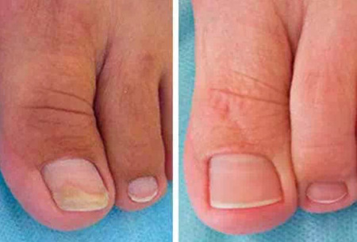
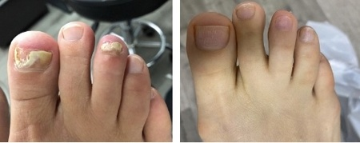
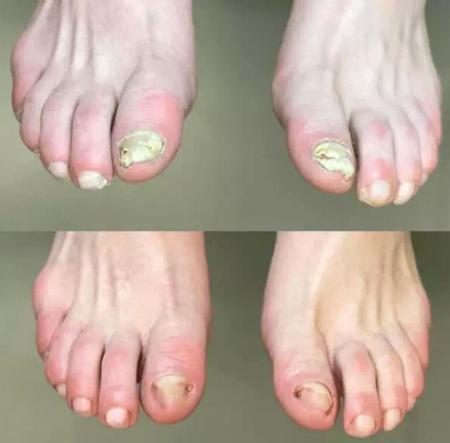
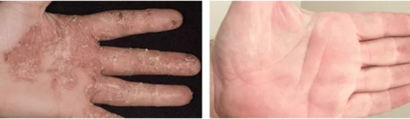
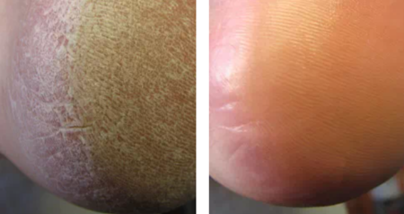
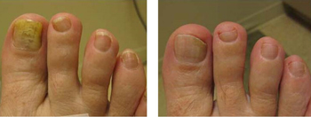

"Cuando los hongos en las uñas y la piel no permiten un estilo de vida normal, ¡solo queda esperar un milagro!" ¡Una entrevista exclusiva con el legendario hombre que hizo un milagro!

Hoy tenemos como invitado al legendario dermatólogo de Santiago, Luis Camilo Cordero.
Periodista: Hola, Dr. Camilo. ¿Podría decirnos unas cuantas palabras sobre usted?
Luis Camilo: Nací en Valparaíso. Me gradué en el Instituto de Investigación en Dermatología de Santiago en 1995, que es donde conocí a mi futura esposa Micaela. Hasta 2017, trabajé en una clínica dermatológica privada como dermatólogo.
Periodista: Por qué dejó su trabajo en 2017?
Luis Camilo: En 2017, a mi esposa Micaela le diagnosticaron una infección por hongos. La verdad es que este fue un punto de inflexión en nuestras vidas, y fue un verdadero reto. Durante los dos años siguientes probó de todo: hierbas curativas y ungüentos, tinturas, bálsamos, tomó varias vitaminas y suplementos. Todo fue en vano. Nada sirvió de nada y los dos estábamos completamente desolados. No podía creer que no hubiera nada que pudiera hacer para ayudar a mi mujer, incluso con mi formación médica. Estaba muy frustrada con nuestro sistema sanitario, así que quise saber si había una forma de dar a mi persona más querida en el mundo una vida larga y feliz y decidí investigar a fondo sobre las infecciones por hongos y los tratamientos para estas enfermedades.
Periodista: ¿De qué investigación está hablando? ¿Podría explicarnos un poco más?
Luis Camilo: Cuando te das cuenta de que tu mujer puede morir dentro de unos años debido a una sepsis interna y a un envenenamiento de la sangre causado por una infección fúngica, quieres hacer todo lo posible para evitarlo. He estudiado todo el material relacionado con la psoriasis, la onicomicosis y la micosis, diversas infecciones fúngicas directa o indirectamente en fisiología, psicosomática y bioquímica. He gastado casi todo mi dinero en estudiar los secretos de los mejores especialistas de Europa en este campo, que son sin duda los principales expertos del mundo en enfermedades fúngicas.
Después de 3 años de estudio y trabajo duro, en agosto de 2020, me di cuenta de que si mezclaba ciertos ingredientes, podría crear un medicamento que, basado en sus propiedades y acción dirigida, podría deshacerse de los hongos de las uñas, la piel y detener el desarrollo de la infección dentro del cuerpo para siempre. Pero me llevé una sorpresa: los ingredientes que necesitaba no estaban disponibles en Chile, así que pedí dinero a unos amigos, solicité un préstamo a un banco y encargué los ingredientes necesarios a Europa y Asia. Al cabo de un mes, más o menos, tenía los ingredientes en mis manos, pero entonces me esperaba otra sorpresa: nadie quería hacer una muestra de prueba del medicamento en un laboratorio. Por suerte, me rescataron unos amigos de la universidad. Después de 3 semanas, por fin conseguí el primer prototipo de mi fórmula antimicótica, y me apresuré a empezar a probarla con mi mujer. Se nos acababa el tiempo cada día, así que no había otra opción.
¡Madre mía! ¡No os podéis creer lo feliz que estaba!
Periodista: ¿Qué pasó?
Luis Camilo: Micaela se sentía mejor cada día. Tras siete días de tratamiento, la piel de sus pies estaba mucho más suave y las uñas más brillantes. La sonrisa que tanto había echado de menos apareció por fin en su rostro. Después de 2 semanas, los hongos en las uñas de los pies y en los pies habían desaparecido por completo. Parecía demasiado bueno para ser verdad, pero las pruebas demostraron que Micaela estaba completamente sana y yo estaba encantado. Fue una verdadera victoria, ¡una victoria para todos nosotros!
Periodista: Efectivamente, ¡los resultados son sorprendentes! Después decidió ir más lejos, ¿no es así?
Luis Camilo: No de inmediato. Al principio sólo disfrutábamos de la vida y atesorábamos cada momento. Entonces tenemos una hermosa hija. Micaela estaba muy agradecida por el tratamiento, ya que el embarazo también supone una gran carga para el cuerpo, y quién iba a pensar cómo habría ido el embarazo si la sepsis y la infección por hongos hubieran seguido extendiéndose por todo el cuerpo.
Una tarde, Micaela me preguntó si había muchas personas en Chile que sufrieran de hongos en las uñas de los pies y en la piel. Hemos consultado las estadísticas y hemos descubierto que Chile está a la cabeza del mundo en número de muertes por infecciones fúngicas. Más de un millón de personas en la Ciudad de Chile tienen enfermedades fúngicas. Entonces me hizo una pregunta que cambió mi vida para siempre: "¿Podemos ayudar a mantener a estas personas con vida y hacerlas sanas y felices de nuevo?" En ese momento, me volví a enamorar de ella. Tengo que decir que esta mujer es lo mejor que me ha pasado en la vida, y por supuesto dije que sí. Me llevó cerca de 2 años perfeccionar mi fórmula y ahora, puedo llamar con orgullo a mi crema antimicótica - la mejor que la gente de nuestro país puede pagar.
Suena muy prometedor. Cuéntenos más sobre .
Micaela y yo hicimos algo que nadie más había hecho antes que nosotros. es una crema revolucionaria a base de:
- EXTRACTO DE LAVANDA: sus propiedades antisépticas te permiten suprimir hongos, bacterias y virus. También tiene un efecto antiinflamatorio y alivia las rojeces y la descamación.
- EXTRACTO DE CENTELLA ASIÁTICA es un agente exfoliante que actúa provocando la pérdida de la capa superior de la piel. Es un tratamiento común y eficaz para una amplia gama de problemas de la piel. Reduce la inflamación causada por las infecciones fúngicas.
- EXTRACTO DE ROMERO del té tiene propiedades antifúngicas y antisépticas, detiene el crecimiento de las infecciones por hongos.
Desafortunadamente, la mayoría de estos ingredientes no se venden en nuestros país, por lo que los traemos de Asia.
Gracias a su fórmula única, puede hacer frente a todo tipo de enfermedades fúngicas. Evita los malos olores, el picor y el ardor de la piel, la sudoración profusa, las uñas quebradizas, la descamación entre los dedos, las llagas purulentas y la piel agrietada
Periodista: ¡Increíble! es un producto realmente innovador. ¿Cómo lo has hecho?
Luis Camilo: Sí, tienes razón. Por el momento, no hay análogos de mi droga en el mundo. Las farmacias venden medicamentos viejos e ineficaces a precios elevados. Muchos de ellos contienen sustancias químicas que pueden ser muy perjudiciales para la salud. Es un verdadero negocio para las farmacias y no les resulta rentable vender medicamentos que funcionen. Así que cuando la salud de un ser querido está en juego, una persona es capaz de todo. Trabajé durante 2 años para perfeccionar mi fórmula y viví con la confianza de que lo que estaba haciendo ayudaría a mi mujer a volver a la normalidad y a curar sus hongos para siempre.
Durante este año, ya ha ayudado a 258.964 personas a librarse completamente de las enfermedades fúngicas y a salvarse de una muerte prematura. Los resultados del tratamiento de nuestros clientes nos enorgullecen, aquí están algunos de ellos:
Para ser sinceros, Micaela y yo no creamos con el propósito de ganar dinero. Sólo queríamos que la gente que, como nosotros, estaba en una situación difícil pudiera recuperarse. Puedes llamarnos anticuados si quieres.
Periodista: ¿Dónde puedo comprar ?
Luis Camilo:
Todavía no está disponible en las farmacias. Y para ser sincero, no creo que las
cadenas de farmacias se alegren de ver nuestro medicamento en sus estanterías.
Como he dicho antes, se trata de un enorme negocio multimillonario para las
empresas farmacéuticas. Venden sus productos a precios bastante elevados. Estos
medicamentos no sólo tienen poca o ninguna cura para las personas, sino que a
menudo tienen terribles efectos secundarios.
Para pedir la crema antimicótica original, debe introducir su nombre y número de teléfono en el formulario de pedido oficial que aparece a continuación para que nuestros asesores puedan ponerse en contacto con usted para realizar su pedido. ¡Queremos dar a conocer nuestra crema al mayor número de chilenos posible, por lo que ofrecemos un 50% de descuento a todos los chilenos hasta el 27.06.2022 inclusive!
Juan Hinojosa Díaz
Este medicamento me resultó muy útil. Probé muchos medicamentos, pero no hubo resultados. Qué contenta estoy de que mis pies vuelvan a estar sanos.
20.06.2022
Irene Picazo Ortega
Pedí esta crema para mi madre porque tenía los talones muy agrietados. Pero después de 10 días de tratamiento, no hay rastro de las grietas y su piel está completamente sana.
20.06.2022
Marina Sánchez García
Dr. Camilo, le estoy muy agradecida por este producto. He estado buscando algo como esto durante mucho tiempo. ¡Tengo muchas ganas de que llegue mi paquete! ¡Gracias!
20.06.2022
María Martínez López
El hongo desapareció al quinto día de tratamiento. No puedo creer que sea verdad, ¡gracias!

21.06.2022
Soraya Moliner Sánchez
¡Es un engaño! ¡El es un medicamento inútil! Lo compré en una farmacia, lo he estado usando durante 2 semanas y ningún resultado, ¡estoy decepcionada!
21.06.2022
Andrés Gil Mendoza
Querida Soraya, ¿has leído bien el artículo? El original no está disponible en las farmacias. Si has comprado una falsa, es tu problema y antes de acusar a alguien, llega al fondo de cuál es el problema. Yo curé mis hongos en una semana con el original, ¡mira mis resultados!

22.06.2022
Luis Camilo Cordero
Soraya, siento que hayas comprado una falsificación... Hoy en día hay muchas falsificaciones, pero todavía puede pedir nuestra crema original con la fórmula innovadora con un 50% de descuento al final del día. ¡AVISO! Puede pedir el original SÓLO a través del formulario de pedido oficial. Le deseo lo mejor.
Saludos, Luis.
22.06.2022
Soraya Moliner Sánchez
Qué tonta soy, me disculpo... Gracias, definitivamente pediré esta crema a través del formulario de pedido.
22.06.2022
Ángel Corral Vega
El también me ayudó mucho. ¡Mis uñas vuelven a estar sanas!

23.06.2022
Carlos Pérez Navarro
¡El es maravilloso! Después de 2 semanas, mi piel estaba completamente limpia y sin hongos.

23.06.2022
Natalia Martínez Hernández
Sí, hoy en día hay muchas falsificaciones. Hice el pedido en esta página y la crema llegó muy rápido, 3 días después, a mi casa, ¡y con un 50% de descuento!
Manuel Ibáñez Romero
Irene, ¿realmente es tan eficaz? Tal vez debería pedírmelo yo también. De todos modos tiene un 50% de descuento, ¿verdad?
23.06.2022
Irene Picazo Ortega
Sí, realmente funciona. Mira los tacones de mi madre, ¡están sanos de nuevo!

24.06.2022
Julián Corcoles Torres
¡Mi amigo se deshizo de un hongo malo en un par de semanas! Yo también he decidido probarlo, ya os contaré mis resultados más adelante)
24.06.2022
Gonzalo Pardo Valero
Hola a todos! Estas son mis uñas después de 12 días de tratamiento!

24.06.2022
Alejandro Blázquez Requena
¿Alguien sabe si realmente me va a ayudar? Las farmacias y los médicos no son muy buenos que digamos.
24.06.2022
Laura Arenas Ballesteros
Alejandro, seguro que sí. Es eficaz y no tiene efectos secundarios. ¡Así que date prisa y pídelo! me ayudó a deshacerme completamente del eczema y los hongos.
25.06.2022
José Miguel Collado Rull
Gracias, ¡el me ha ayudado mucho! No pospongas el tratamiento o puede ser demasiado tarde.
25.06.2022
Sandra Marín Cuenca
Gracias, Dr. Camilo. Si no fuera por ti, no habría creído en la eficacia del . Llevo 5 años viviendo con mi marido y tiene el mismo problema que yo. Sufrió mucho y ahora sus uñas y pies están sanos de nuevo. Además, el pedido llegó muy rápido.
25.06.2022
Luis Camilo Cordero
Sandra, me alegro. Mejor dime cuánto tardó en recuperarse.
27.06.2022
Sandra Marín Cuenca
Luis, tardó más o menos un mes en recuperarse. Ahora puede moverse libremente y no se queja como solía hacerlo. Estoy muy contenta por él.
25.06.2022
Luis Camilo Cordero
Perfecto. Gracias, Sandra.
Elena Rodenas Moya
¡El resultado superó todas mis expectativas!
25.06.2022
Lorena Tebar Núñez
Acabo de rellenar el formulario.
¡Me sorprendió el hecho de que realmente lo vendiesen con un 50% de descuento!
Dejé mi número de teléfono en vuestro sitio web y me llamaron en cuestión de minutos para confirmar el pedido. A partir de ahora, quiero vivir sin dolor y empezar a disfrutar de mis paseos otra vez :)
26.06.2022
Esther Cano Garrido
También pedí uno para mí. Durante varios años tuve unos hongos terribles en los dedos de las manos y de los pies. Aparentemente me infecté en la piscina. me ayudó en un par de semanas. Nunca imaginé que fuera posible.
26.06.2022
Sofía Fernández Úbeda
¡1 curso de tratamiento con se deshizo de mis problemas de hongos en las uñas para siempre!
26.06.2022
Jorge Medina Sáez
También lo pedí en vuestra página web. Me ayudó mucho. Si tienes un problema de hongos, no hay nada mejor, créeme. Además, llega rápidamente. Mi paquete llegó en sólo 3 días.
26.06.2022
Luis Camilo Cordero
¡Gracias, Jorge! Intentamos entregar a nuestros clientes lo más rápido posible para que puedan comenzar el tratamiento al instante.
27.06.2022
Lucía Ruiz Gómez
Leí el artículo y decidí pedir esta crema con un 50% de descuento inmediatamente para probarlo. Me inspiró mucho la historia de Luis y su esposa. El caso es que los productos habituales no me ayudaron por mucho tiempo. Los médicos me dijeron que las infecciones por hongos son difíciles de eliminar por completo del cuerpo. Ahora quiero escribir sobre los resultados del tratamiento. llegó a mí muy rápidamente. Sentí tal alivio después de un solo uso que decidí compartir mi alegría con los demás. Estoy muy contento de poder volver a llevar una vida normal.
27.06.2022
Dolores Navarro Rodríguez
¿Alguien puede decirme dónde puedo conseguir este producto? No lo he visto en las farmacias y tengo un poco de miedo de comprarlo por Internet. No me gustaría comprar una falsificación porque entiendo que no servirá para nada.
27.06.2022
Luis Camilo Cordero
Vuelvo a decir que se puede pedir SOLAMENTE a través del formulario de pedido oficial. Para evitar malentendidos, simplemente haced clic en el botón de enlace justo arriba. Me gustaría recordaros que se puede obtener con un 50% de descuento, pero esta oferta no durará mucho, ¡así que daos prisa!
Por favor, tened cuidado con las falsificaciones.
27.06.2022